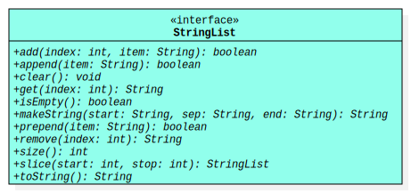

StringList is an abstract data type (ADT) that
defines operations for a sequence of references to non-empty
String objects. Any object that implements
this interface is a string list object
, and each String reference in
the sequence it represents is an item.

UML Diagram for StringList
Programmers that use a string list have precise control over the items in
the sequence it represents. They may place or access an item using
an index value (i.e., a
nonnegative integer that denotes a position). If they exist, the index
values for the first and last items are always 0 and size() - 1,
respectively, and a string list that has no items is empty.
Remember, the items of a string list are references to non-empty
String objects. In Java, a reference is either null
or refers to some object. This implies that an item cannot be null.
As such, if you inspect the documentation for any method that inserts an
item into a string list, you will find that a
NullPointerException is thrown whenever there is an attempt
to insert null.
Storage
Since StringList is an ADT, any class that implements this interface
is theoretically free to store its items using any kind of data structure
that the author wants so long as objects of the class all behave like string
lists as documented in the methods of this interface. For example, the class
for one implementaton might use a linked list of nodes to store its items,
while another implementation might use an array.
Unless explicitly stated otherwise, any mention of size
found in this documentation specifically refers to the size of a string list
and not the size of its underlying data structure. Please keep this in mind,
for example, when observing the conditions for the
IndexOutOfBoundsException in the documentation for
various methods.
The idea that the size of the underlying data structure
may be different than the size of the string list may seem foreign to some,
but understanding the difference is critical for certain implementations.
For example, in a string list that uses an array to store its items, the
array might have more elements than the number of items currently in the
string list (i.e., the array's size might be bigger than the string list's
size); this is usually done to minimize the number of times the the string
list's array is resized. In Java, an array object cannot actually be resized,
so the verb resize
is usually taken to mean the creation of a new, usually larger, array
object and the loop(s) needed to copy over the elements from the original
array object to the new one.
Required Constructors
All classes that implement StringList are required to have the
public constructors described below, where ClassName refers
to name of the implementing class (i.e., replace ClassName as
needed).
Inserts an item into this string list at the specified index
position. If an item was already at that position, then that item and
subsequent items are shifted to the right (i.e., one is added to their
indices).
Parameters:
index - index at which the specified string is to be inserted
Prepends an item to this string list (i.e., it inserts the item at
index 0). If an item was already at that position, then that item
and subsequent items are shifted to the right (i.e., one is added to
their indices).
Removes the item at the specified index position in this string list.
Any items in the string list that were after the removed string are
shifted to the left (i.e., one is subtracted from their indices).
Returns a string representation of this string list that begins with
start and ends with end, with every string in the
string list by sep. Here is an example, assuming list
refers to an empty StringList:
list.add("a");
list.add("b");
list.add("c");
String result = list.makeString("~", "!", "#");
System.out.println(result);
The output would be:
~a!b!c#
Parameters:
start - specified starting string
sep - the specified separator string
end - the specified ending string
Returns:
a string representation of this string list that begins with
start and ends with end, with every string
in the string list separated by sep
Returns a new string list that contains the items
from this list between the specified start index (inclusive) and
stop index (exclusive). If start and stop are
in bounds and equal, then the returned string list is empty. The
returned string list must be an object of the same class as the
calling object. Here is an example, assuming list
refers to a non-empty string list with
items referring to "a", "b", "c", and
"d":